Acobamba, Tarma, Junín
Greenbox S.A.C. nació en 2011, fundada por Johannes y Christian. Opera en el valle de Tarma, a unos 3.000 m s. n. m., con oficinas comerciales en Alemania y EE. UU.
Fuente empresarial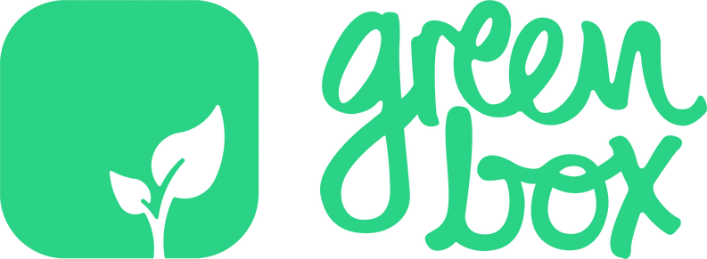
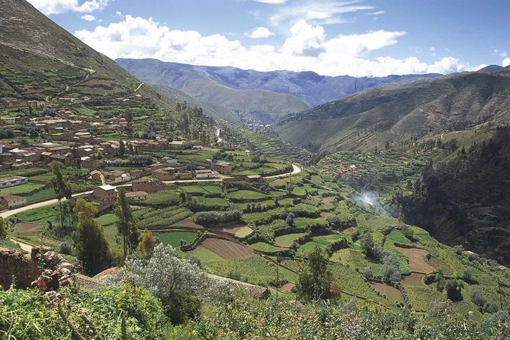
Empresa, cadena de valor
y responsabilidad social.
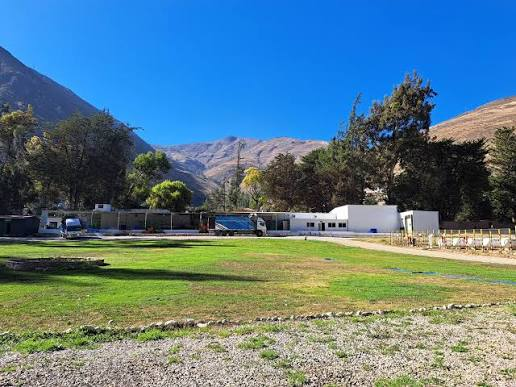
Greenbox S.A.C. nació en 2011, fundada por Johannes y Christian. Opera en el valle de Tarma, a unos 3.000 m s. n. m., con oficinas comerciales en Alemania y EE. UU.
Fuente empresarialtoneladas de fruta fresca
procesada por año
toneladas de fruta deshidratada
exportada
Deshidrata fruta y ofrece superalimentos y purés. En sus FAQ declara más de 29.000 t de fruta fresca procesada al año y más de 2.500 t de fruta deshidratada exportada; son cifras empresariales.
Fuente: FAQ de GreenboxSuministra ingredientes y soluciones de marca privada. Declara atender 15 países; publica Greenbox GmbH en Pinneberg y Greenbox LLC en Miami.
Declaración empresarial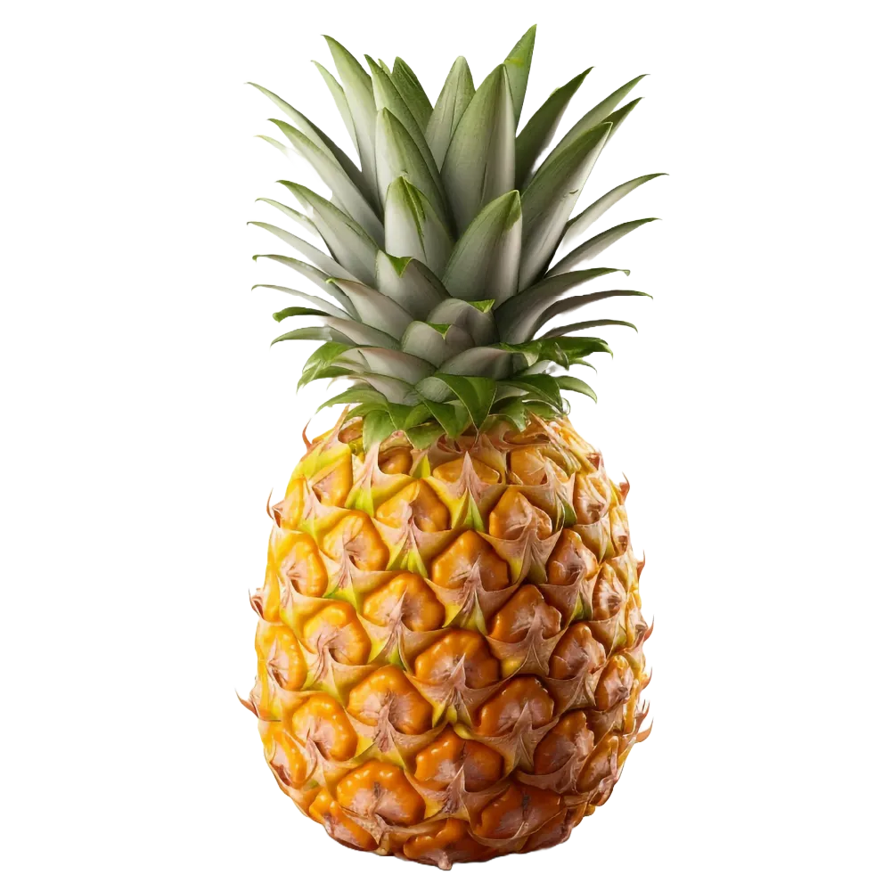
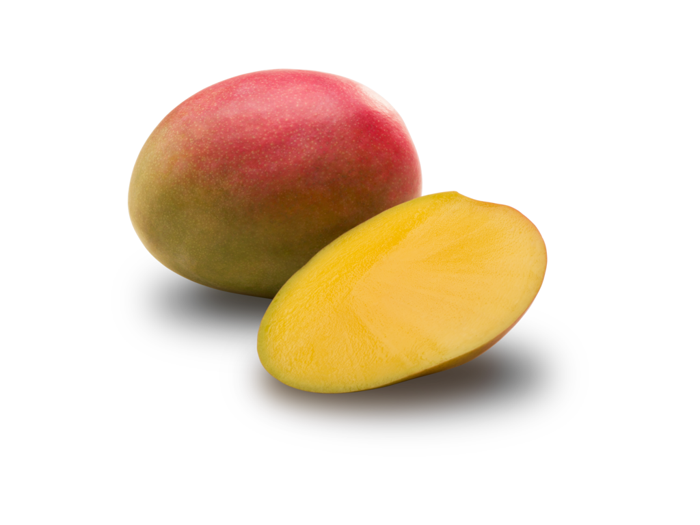
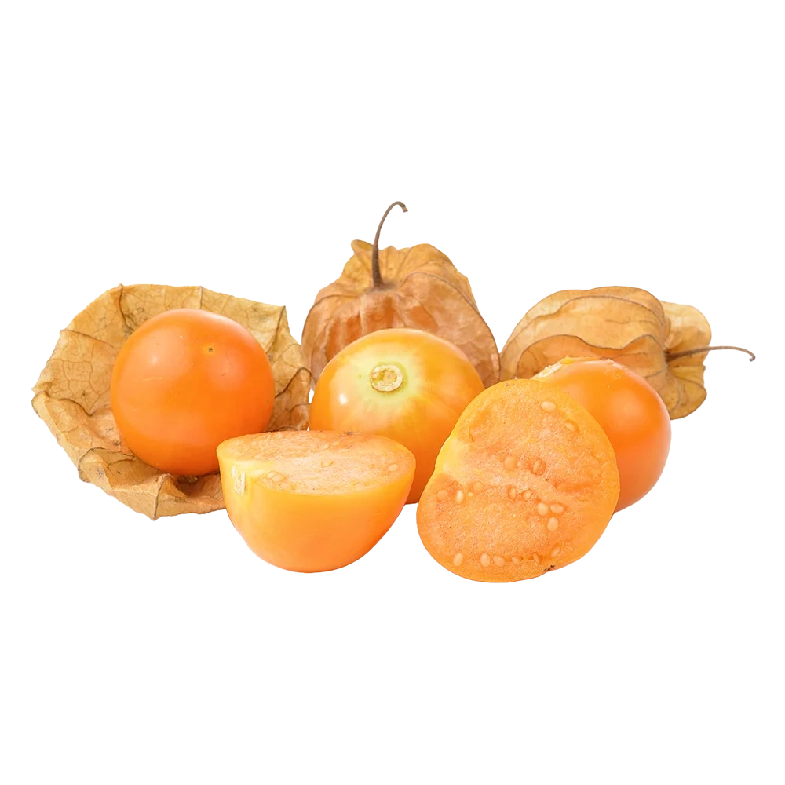
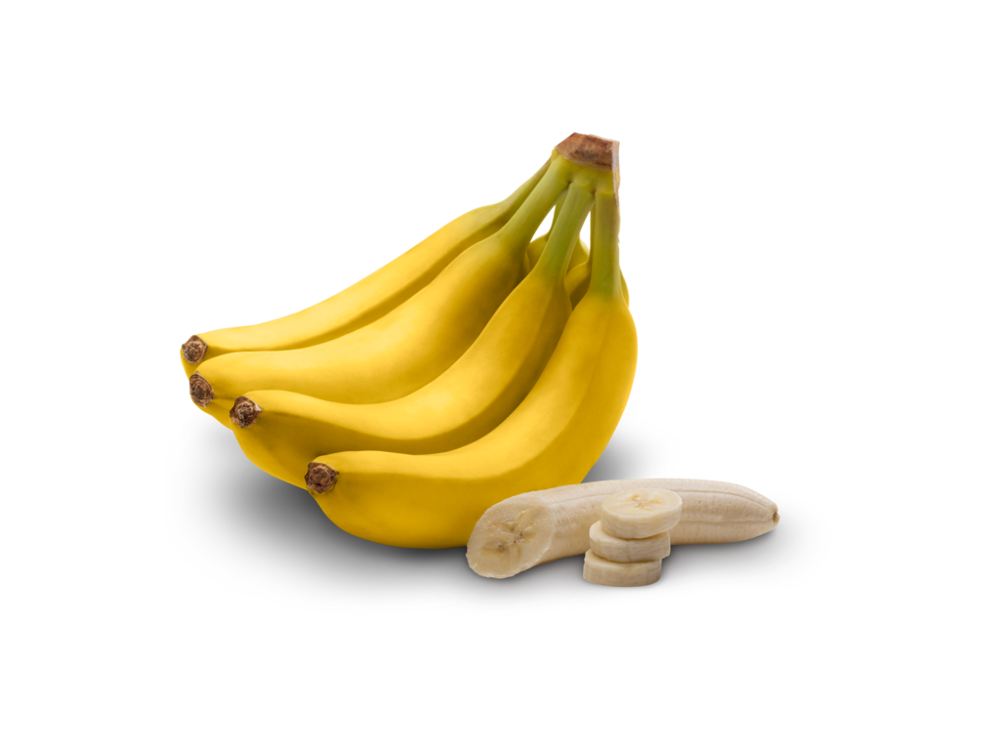
Piña, mango, aguaymanto y banana. La empresa destaca experiencia en las tres primeras y ofrece cortes y formatos adaptados al comprador industrial.
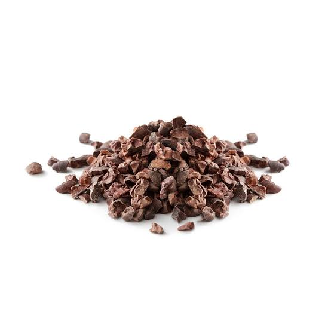
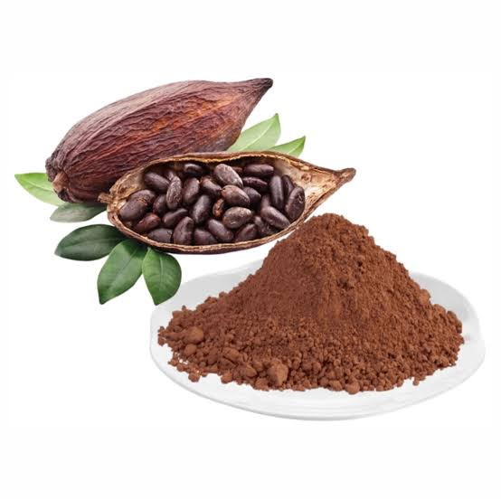
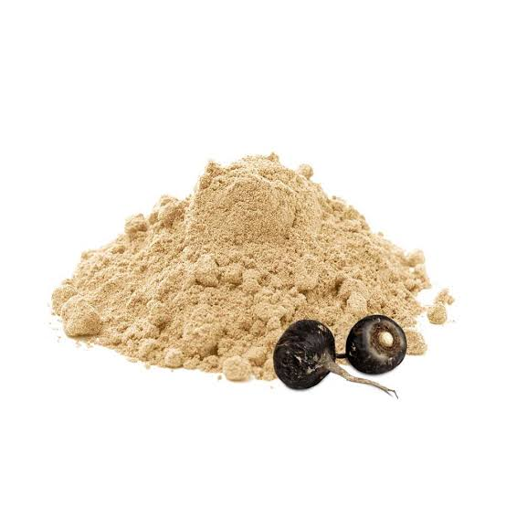
Nibs y polvo de cacao; polvos de maca, camu camu y lúcuma. Son ingredientes del catálogo, no promesas de beneficios clínicos.
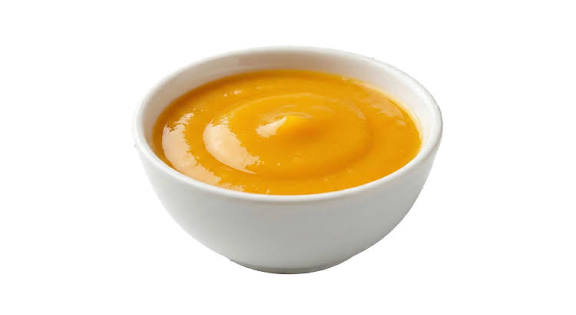
Dos líneas publicadas en el catálogo. La empresa también ofrece desarrollo de productos a medida mediante su equipo de I+D.
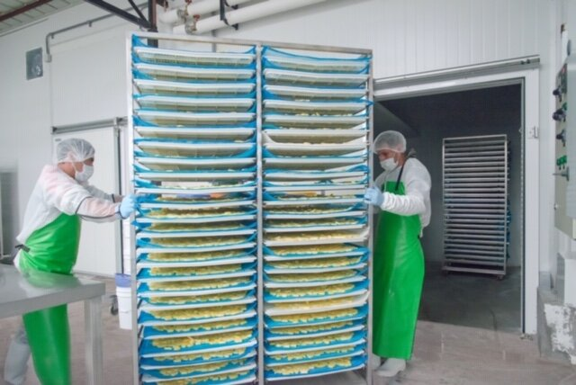
Estéfani Huamán, asistente de producción, describe la formación para mejorar el manejo de equipos y maquinaria en el testimonio publicado por NESsT.
Greenbox declara igualdad laboral, salarios justos y capacitación continua.
Greenbox describe un centro donde las madres pueden dejar a sus hijos durante la jornada.
Las políticas laborales y la guardería declaradas por Greenbox se relacionan con la participación de mujeres. Es una conexión analítica con el ODS 5.
El empleo de planta reportado por NESsT, la formación en maquinaria y el precio mínimo agrícola vinculan el caso con trabajo e ingresos.
El compost y el seguimiento de lotes conectan gestión de residuos y trazabilidad.
Las prácticas orgánicas y los agentes de control de plagas se relacionan con el cuidado del suelo.
ODS: Objetivos de Desarrollo Sostenible. Relación analítica; no es una certificación de la ONU.
Los distintivos son referencias gráficas. El respaldo de cada estándar se explica al seleccionar su fila.
Gestión ambiental: organizar procesos, recursos y responsabilidades.
ProInnóvate registra un proyecto de 2021 para implementar y certificar la gestión ambiental con ISO 14001.
Producción y calidad participan directamente en el proceso. Administración/finanzas y RR. HH. se distinguen como apoyo en la clasificación funcional del documento base.
Más de 500 pequeños agricultores abastecen fruta. El precio mínimo anual y el acompañamiento orgánico son parte de la relación descrita por NESsT.
Fabricantes, marcas de snacks, distribuidores y socios de marca privada compran ingredientes. Greenbox ofrece formatos personalizados y contratos de suministro continuo.
Cuatro préstamos entre 2019 y 2024; quinto en 2025. El último financia infraestructura y equipos, con planes de ampliar líneas y contratar un gerente de operaciones.
Compras con precio mínimo anual, asistencia orgánica y empleo de planta conectan el negocio con agricultores y trabajadores. NESsT documenta estas relaciones.
Control de plagas con agentes orgánicos, residuos biológicos convertidos en compost y trazabilidad de lotes conectan las prácticas ambientales con la producción.
Los estándares, la trazabilidad y las relaciones con agricultores, trabajadores y clientes conectan la producción de Tarma con compradores internacionales.